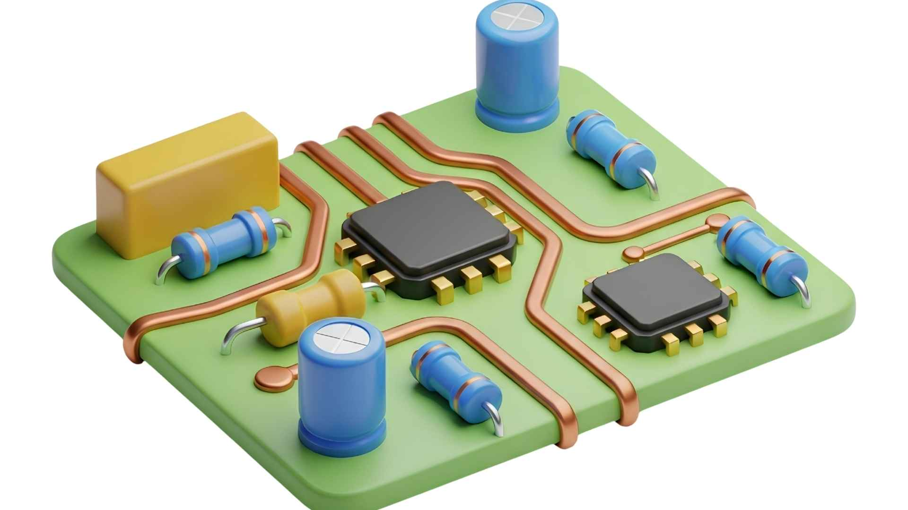
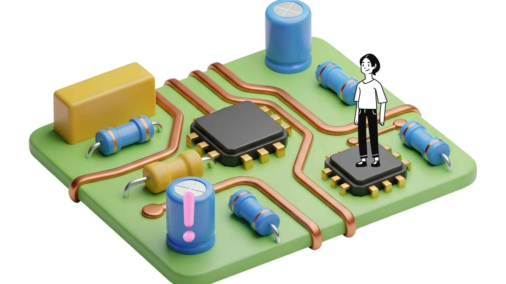

Pourquoi les condensateurs sont le point faible numéro 1 des appareils électroniques
Téléviseur qui ne s'allume plus, ampli qui ronfle, chargeur qui claque… Derrière ces pannes se cache presque toujours un condensateur électrolytique fatigué. Découvrez pourquoi cette pièce est le maillon faible de toute l'électronique moderne, et comment vous en prémunir au Togo.
Un réservoir d'énergie… qui se vide avec le temps
Un condensateur électrolytique, c'est comme un petit réservoir qui stocke de l'électricité pour la restituer au bon moment. Dans une alimentation, il lisse la tension. Dans un ampli audio, il évite les parasites. Dans un circuit numérique, il stabilise l'alimentation des puces.
Présent partout :
- Alimentations TV, décodeurs, box Internet
- Amplis Hi-Fi, home cinéma
- Chargeurs de téléphone, ordinateurs
- Cartes mères, écrans LED

Trois ennemis qui les tuent à petit feu
Contrairement à une résistance ou un transistor, le condensateur repose sur un liquide chimique (l'électrolyte). Ce liquide est sensible à trois agressions qui, au Togo, sont exacerbées :
🌡️ La chaleur ambiante
Chaque augmentation de 10°C divise par deux la durée de vie. Sous 35°C à Lomé, un condensateur 85°C peut mourir en 3 ans au lieu de 10.
⚡ Les surtensions secteur
Le réseau CEET peut connaître des pics. Un condensateur 400V sollicité près de sa limite verra son diélectrique se dégrader plus vite.
⏳ L'assèchement naturel
Même stocké, un condensateur électrolytique perd lentement son liquide. Après 5 à 7 ans, l'ESR grimpe et il ne filtre plus correctement.
🔌 Les cycles marche/arrêt
Les appareils qu'on éteint souvent (TV, postes radio) fatiguent davantage leurs condensateurs que ceux qui restent allumés.
Les 5 symptômes qui ne trompent pas
- Condensateur bombé : le dessus n'est plus plat mais arrondi.
- Fuite brune : traces de liquide séché autour du composant.
- Appareil qui ne démarre plus : ou qui s'éteint au bout de quelques secondes.
- Ronflement dans les haut-parleurs (ampli audio).
- Image qui tremble ou qui met du temps à apparaître (TV LCD).

L'effet domino : quand un seul condensateur paralyse tout
Les condensateurs sont souvent placés à des endroits critiques. Si celui qui filtre la tension de la puce principale est défaillant, la puce reçoit une alimentation hachée et peut se bloquer, voire griller. C'est pour cela qu'un simple condensateur à 500 FCFA peut mettre hors d'usage un téléviseur qui en vaut 150 000 FCFA.
Les 4 règles d'or pour un remplacement durable
Capacité (µF) identique
Tolérance de ±20%. Par exemple un 1000 µF peut être remplacé par un 820 µF ou 1200 µF, mais jamais par un 470 µF.
Tension (V) égale ou supérieure
Un condensateur 16V peut être remplacé par un 25V ou 35V. Plus la marge est grande, mieux c'est.
Température 105°C
Oubliez les 85°C, surtout au Togo. Nos condensateurs sont tous en 105°C pour une durée de vie multipliée par 4.
Faible ESR (Low ESR)
Indispensable pour les alimentations à découpage et les filtrages numériques. Nos modèles sont sélectionnés pour leur faible résistance série.
Les condensateurs qu'il vous faut, directement au Togo
Plus besoin de commander sur des sites étrangers. TogoMicroFarad stocke les valeurs les plus demandées par les réparateurs togolais. Voici deux packs prêts à l'emploi :
Pack Réparateur Essentiel (30 pièces)
Les 15 valeurs les plus courantes (10V à 50V, 10 µF à 1000 µF) pour dépanner TV, amplis, alimentations. Un indispensable de l'atelier.
Kit spécial
5 pièces spéciales alimentations secteur : 10 µF, 22 µF, 33 µF, 47 µF, 100 µF. Résout 90% des pannes de démarrage.
Besoin d'une valeur spécifique ? Écrivez-nous, nous l'avons probablement en stock.
Demander un devisQuestions fréquentes
Est-ce que je peux mélanger des marques de condensateurs ?
Oui, du moment que les spécifications (capacité, tension, température, ESR) sont respectées.
Un condensateur neuf peut-il être défectueux ?
Très rare, mais possible. C'est pourquoi nous testons chaque lot avant expédition.
Combien de temps dure un condensateur de qualité ?
Dans de bonnes conditions (105°C, bien ventilé), 10 à 15 ans. Avec la chaleur de Lomé, comptez 5 à 7 ans.
Puis-je souder sans expérience ?
Oui, avec un fer 30W et un peu de pratique. Consultez notre guide "Comment remplacer un condensateur".